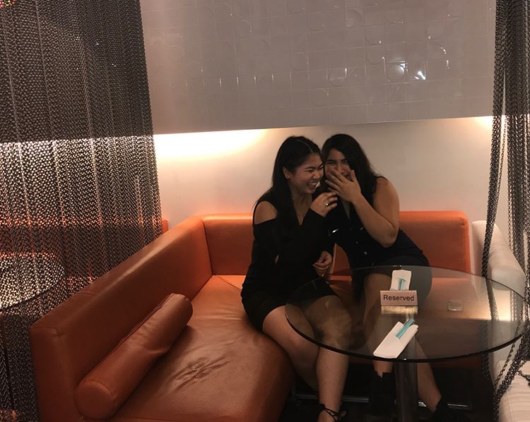

T. Tissington
About
Hi, I'm Tina, it's nice to meet you! I'm currently studying computer engineering at the University of Guelph and am extremely proud if it. I've been interested in technology since the moment I got my first Nintendo DS for my birthday as a kid. Little Tina was amazed by the huge worlds I got to explore inside such a little device. When I was in elementary school, math was my favourite subject, and in highschool I found a love for physics. These academic prowesses combined with my love for games had me researching virtual reality technology and helped encouraged me make the decision to study computer engineering in the first place.
Now I am ready to pursue a career in a STEM field as a future computer engineer! I am a focused, extremely hard-working young woman and excel in not only my academics but also in extracurriculars. I am ambitious and take on personal projects as well as complete school assignments with a high degree of excellence. Due to my strong communication and leadership skills that I've deceloped from my athletics, I am able to work well with others as well as produce work to the same caliber independently. I love what I study, and that passion drives me to do my best everyday whether it's in class, or out of it.